01
Решения
Кто принимает решения, как быстро и на основании чего.
- Что фиксируем
- Общие приоритеты и понятный порядок принятия решений.
Бизнес-игропрактик командный коуч
То, что привело компанию к сегодняшним результатам, не гарантирует достижение следующих.
Помогаю руководителям и командам находить новые способы работать вместе, адаптироваться к изменениям и превращать их в источник роста бизнеса.
Начнём с вашего запроса — подберём формат под команду.
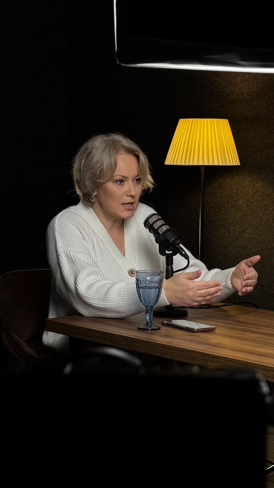
От обсуждения к действию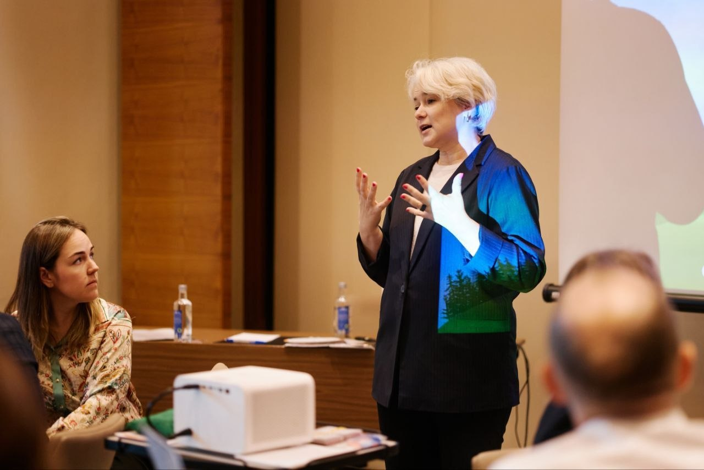
Договорённости,
которые становятся действиями
лет на руководящих
позициях
игровых
тренингов
отраслей
бизнеса
Беларусь и другие страны
На русском языке
01 / С чего начать
Выберите ближайшую ситуацию — это поможет определить отправную точку для разговора.
Можно начать с этого
Согласовать цель, выбрать приоритеты и перевести обсуждение в план действий с ответственными.
Это ориентир, а не диагностика. Окончательный формат подберём после обсуждения контекста.
02 / Форматы работы
Каждая программа адаптируется под цели, контекст и реальные кейсы вашей компании. Можно работать с отдельной задачей или выбрать комплексную программу.
Практические программы по современному менеджменту: делегирование, обратная связь, управление изменениями. Кейсы и задания адаптируются под вашу компанию.
Фокус работы
Отработка инструментов и план их применения в ежедневной работе руководителя.
Моделируем управленческие ситуации, чтобы безопасно тренировать решения, взаимодействие и лидерство. После игры разбираем опыт и связываем его с рабочими задачами.
Фокус работы
Увидеть привычные модели поведения и договориться, что команда будет делать иначе.
Совместно работаем над стратегией компании или отдела, планированием года, миссией и ценностями. Делаем обсуждение структурированным и вовлекаем участников.
Фокус работы
Согласованные приоритеты, решения, ответственные и следующие шаги.
Определяем уровень зрелости команды, сильные стороны, управленческие риски и конкретные точки роста. Отделяем симптомы от причин и определяем приоритеты развития.
Фокус работы
Понимание текущей ситуации и обоснованный выбор дальнейшего формата работы.
Индивидуально разбираем сложные переговоры, конфликты, изменения и управленческие решения с учётом вашего контекста.
Фокус работы
Более осознанные решения и конкретные шаги в рабочей ситуации.
Ищем идеи для продуктов, рынков и оптимизации процессов. Организуем обсуждение так, чтобы каждый участник мог внести вклад.
Фокус работы
Отобранные идеи и план их дальнейшей проверки или реализации.
03 / Что меняется
До начала работы согласуем, какие изменения важны для бизнеса и по каким признакам будем оценивать продвижение.
Кто принимает решения, как быстро и на основании чего.
Как отделы договариваются, дают обратную связь и решают конфликты.
Как распределяются задачи и выполняются договорённости.
Игровой опыт разбираем на реальных кейсах компании: что помогало, что мешало и какие действия стоит перенести в ежедневную работу.
04 / Как я работаю
Начинаем с реальной ситуации вашей команды. Глубину работы и набор инструментов определяем под задачу; сопровождение включаем в комплексную программу.
Обсуждаем контекст, команду и ситуацию, которую хотите изменить.
На выходеПонятный рабочий запрос
Формируем желаемую модель управления и критерии результата.
На выходеСогласованный ориентир
Проводим игры, тренинги, сессии и коучинг под вашу задачу.
На выходеОпыт и инструменты для работы
Переносим инструменты в реальные рабочие процессы команды.
На выходеКонкретные шаги применения
В комплексной программе закрепляем практику и оцениваем изменения.
На выходеРазбор прогресса и корректировка
Первый шаг
Опишите задачу, состав команды и то, что хотите изменить. Это поможет выбрать подходящий формат работы.
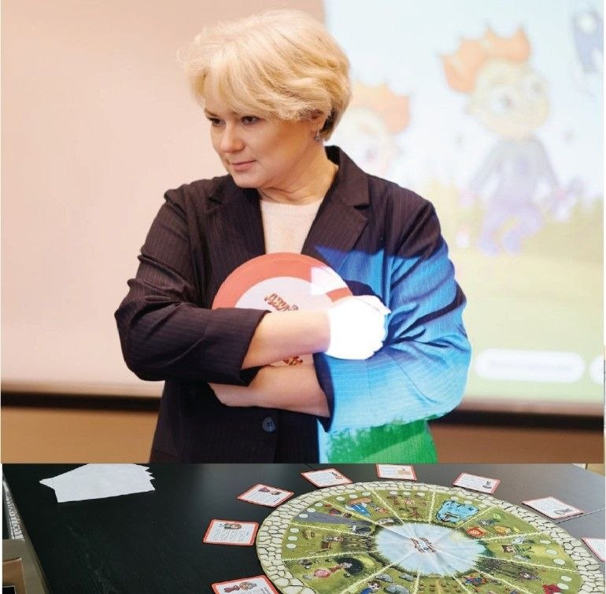
Флагманская программа
Для команд, которым нужна последовательная работа: от диагностики до сопровождения изменений. Этапы и критерии результата адаптируются под запрос компании.
В работе
Работа начинается с того, что происходит в вашей компании: как принимаются решения, распределяется ответственность и взаимодействуют отделы.
Бизнес-игры, разборы кейсов и обсуждения помогают увидеть привычные модели поведения и связать новый опыт с рабочими задачами.
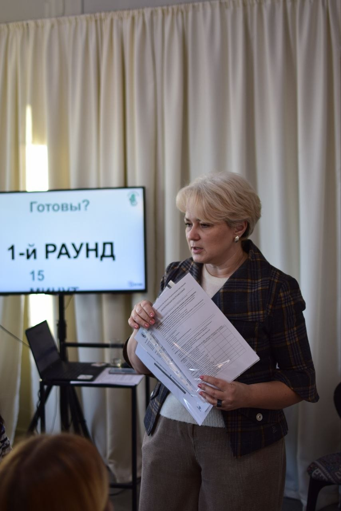
Бизнес-игры и тренинги
Моделируем управленческие ситуации и отрабатываем решения в безопасной игровой среде.
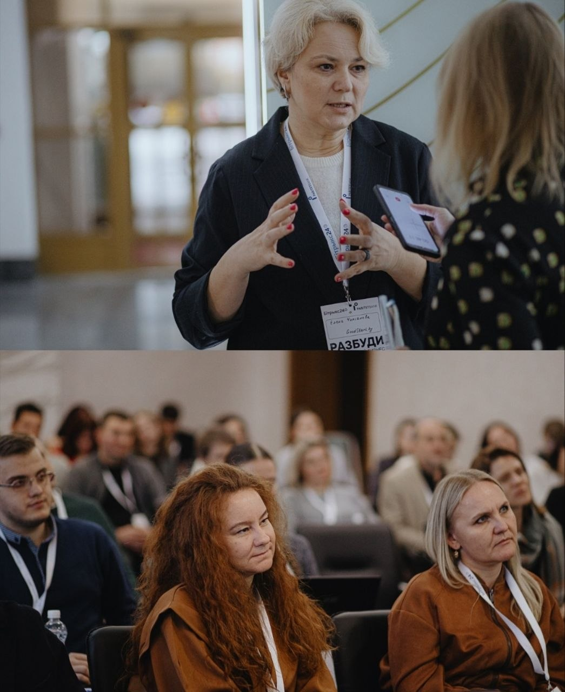
Обмен опытом
Обсуждаем реальные кейсы, разные точки зрения и инструменты, которые можно применить в команде.
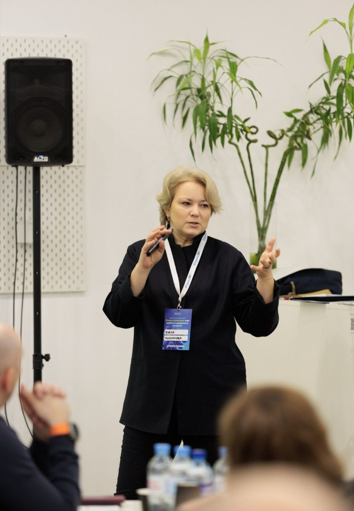
Работа с аудиторией
Вовлекаем участников в обсуждение, чтобы находить решения вместе и слышать друг друга.
Из встречи — в рабочую практику
После игры разбираем, что произошло, и связываем выводы с задачами бизнеса. В программах с сопровождением возвращаемся к внедрению договорённостей.
Обсудить формат для команды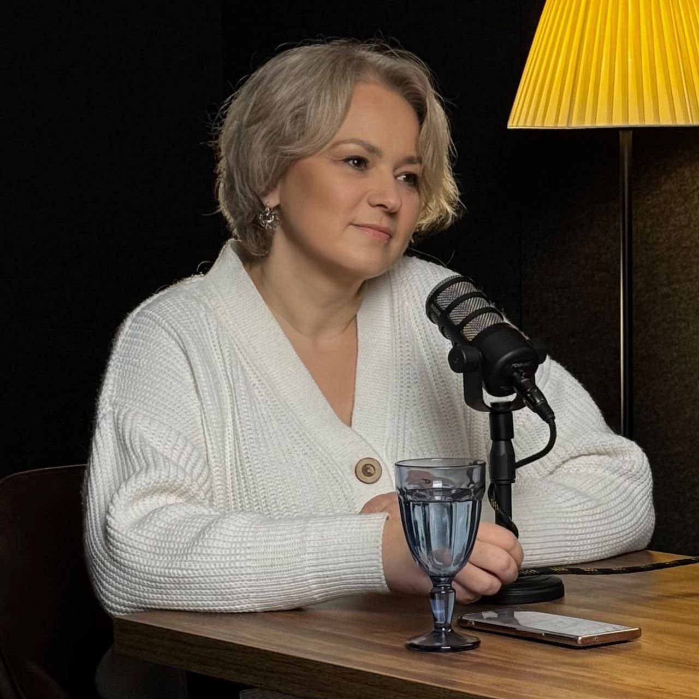
Об эксперте
Бизнес-игропрактик · командный коуч · модератор деловых тренинговых игр и бизнес-сессий · организационный консультант
«Создаю пространство, в котором руководители видят новые возможности, команды обретают единство, а бизнес получает устойчивое развитие».
Опыт сотрудничества
Бизнес-игры, обучение и развитие команд для компаний из разных отраслей.
Битрикс24
А-100 Девелопмент
Астотрейдинг · А-100 АЗС
ЗАО Банк ВТБ
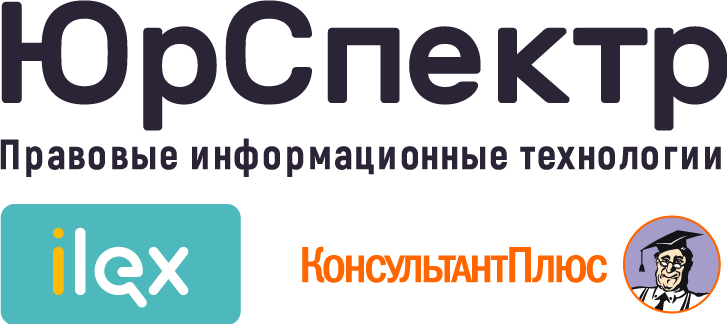
ООО «ЮрСпектр»
Техартгруп · iTechArt
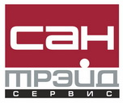
ООО «Сантрэйд-сервис»
ООО «ТД Проплекс»
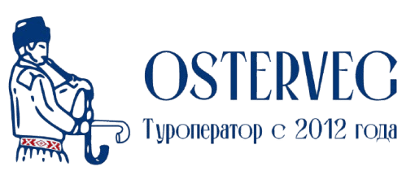
ООО «Остервег»
ХАЙКОР ГЕЙМЗ
ООО «ДабракарГрупп»
ОАО «Пеленг»
ООО «АФ ТрансБел»
ООО «Агентство медицинского маркетинга»
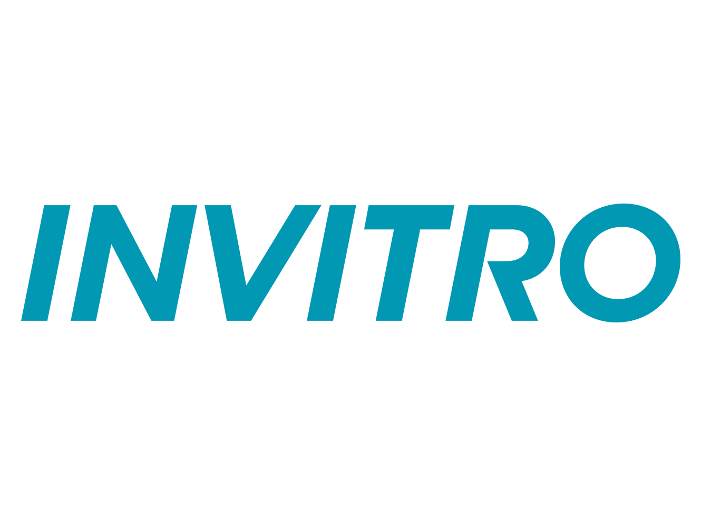
ИООО «Независимая лаборатория ИНВИТРО»
О форматах, подготовке и работе с командой.
Остался вопрос?Обсудим его в контексте вашей команды и задачи.
Задать вопросНачнём с вводного разговора о вашей задаче, команде и ожиданиях. Можно прийти без готового технического задания — формат и содержание определим вместе.
Стоимость рассчитывается индивидуально после обсуждения запроса. На неё влияют задачи, состав команды, формат, длительность и объём сопровождения. Согласуем программу и условия до начала работы.
Развитие управленческих компетенций, повышение эффективности командного взаимодействия, подготовка к изменениям, стратегические сессии, развитие лидерства и совершенствование системы управления.
Это не только передача знаний. В работе используются диагностика, командный коучинг, бизнес-симуляции, реальные кейсы компании и сопровождение внедрения — чтобы новые инструменты применялись в ежедневной работе.
Да. Содержание, кейсы, игры и задания адаптируются под цели бизнеса, особенности команды и отрасль.
Со стороны заказчика нужна только вводная встреча: обсудим цели, ожидания и особенности команды. Методические материалы и сценарий программы Елена готовит самостоятельно.
Да. Форматы масштабируются и для небольших команд от 5–7 человек, и для крупных компаний.
Да. Многие программы проходят онлайн или в смешанном формате. Бизнес-игры чаще проводятся очно для максимальной вовлечённости.
Разовая программа занимает от 2 часов, диагностика — до двух недель, комплексные программы — от 90 дней.
Да. Любой продукт можно провести как самостоятельное мероприятие. Если запрос требует комплексных изменений, Елена предложит более устойчивое решение.
До старта фиксируем критерии: скорость решений, качество взаимодействия, ответственность команды и выполнение плана развития.
Следующий шаг
Расскажите, что происходит в команде и каких изменений вы ждёте. Вместе определим, с чего стоит начать.
Составьте короткий текст и отправьте его Елене удобным способом.
Текст подготовлен
Запрос ещё не отправлен. Проверьте текст, затем откройте почту или скопируйте его в Telegram.
Открыть Telegram